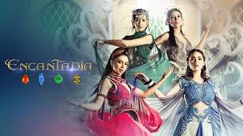

Unlike movies, TV shows offer the unique luxury of time. I love this medium because it allows for deeper character development and complex world-building that cannot be rushed. Watching a series allows me to truly live alongside the characters, experiencing their growth, failures, and triumphs across multiple seasons. It turns storytelling into an immersive journey rather than a brief visit.

These shows blend the impossible with deep human emotion. This category explores otherworldly realms, magic systems, and epic prophecies, all while keeping the emotional stakes grounded in realistic character struggles and moral dilemmas.
Explore FantasyA window into the past, these shows dramatize significant eras and figures. I enjoy how they recreate the atmosphere of bygone times, focusing on political intrigue, societal shifts, and the timeless nature of human ambition and conflict.
Explore HistoryHigh-octane sequences meet high-stakes storytelling. This category focuses on tactical missions, crime sagas, or survival stories where the physical action is always driven by intense personal drama and heavy consequences.
Explore Action